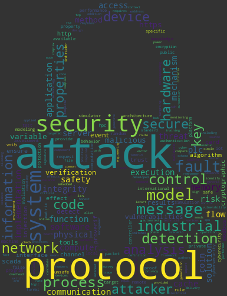
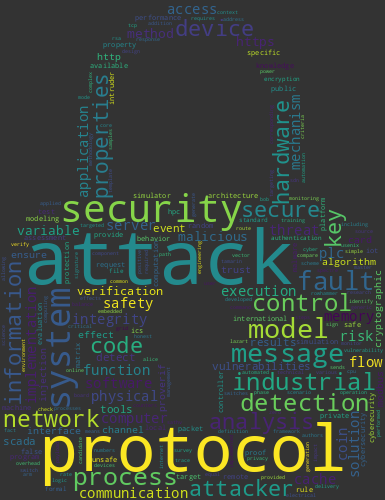

My research focuses on the cybersecurity of industrial and critical
Internet of Things (IoT) (ICS, medical devices, connected vehicles,
smart cities). The goal is to analyze how cyberattacks compromise the
safety of these systems, meaning their reliable and safe operation.
With the rise of Industry 4.0, IoT is expanding into critical
domains, increasing cyberattacks (e.g., Stuxnet, Mirai). These systems,
unlike classical IT systems, prioritize process availability and
safety. The major challenge is the joint study of safety and and
security, often interconnected and potentially antagonistic, especially
since current tools rarely manage them together due to combinatorial
complexity.
My research areas are:
- Industrial and critical IoT security: Analysis
of industrial IoT vulnerabilities and development of
safety-security risk analysis methods, including digital
twins.
- Formal verification of industrial protocols:
Validation that industrial protocols ensure secrecy,
authentication, and integrity against intrusions through formal
verification.
- Host intrusion detection in embedded systems:
Development of machine learning-based mechanisms to detect
microarchitectural attacks.


 
